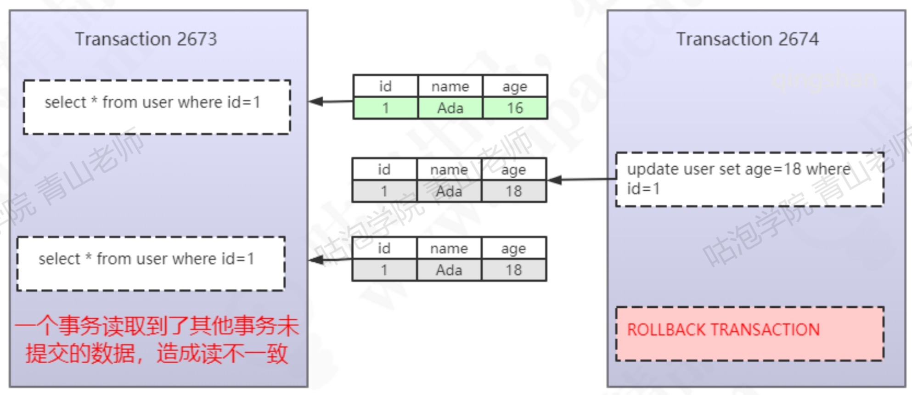
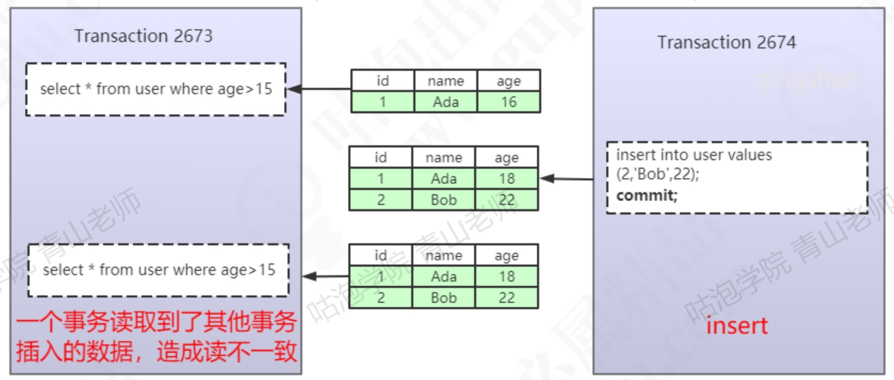
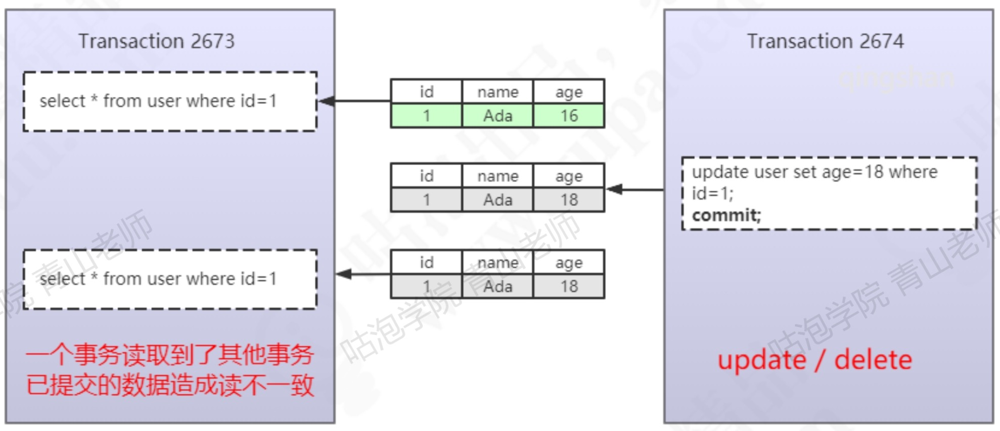
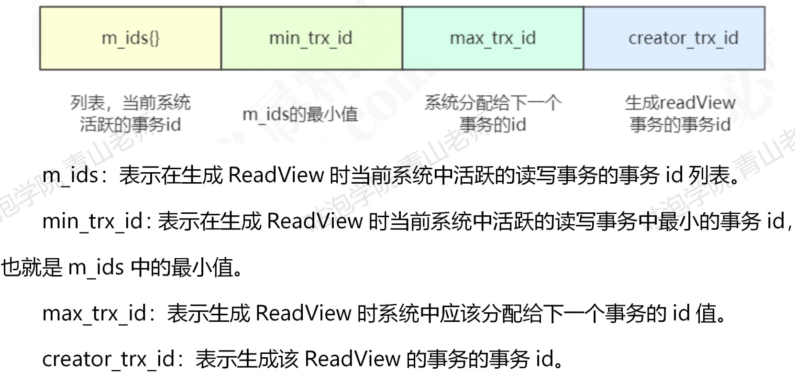

简介
除了做集群的NDB，只有InnoDB支持事务，MyISAM不支持
除了DML，单挑DDl（create、drop）和DCL（grant、revoke）也有事务
通过begin或者start transaction开启，通过rollback回滚或commit提交，或者客户端连接断开，事务也会回滚
事务的四大特性
原子性（Atomicity）
一系列操作要么一起成功，要么一起失败，如果前面的操作成功，后面有操作失败，在InnoDB里通过undo log（记录了数据修改之前的值）来回滚。
隔离性（Isolation）
多个事务对表或行的并发操作应该互不干扰
持久性（Durability）
事务提交后的结果不能因为宕机、重启等丢失，在InnoDB里通过redo log和双写缓冲来实现（操作数据时，会先写到内存的buffer pool里，同时记录redo log，如果刷盘之前出现异常，重启后就可以读取redo log，写入磁盘，前提是通过双写缓冲保证了数据页完整，没有被破坏）。
一致性（Consistent）
原子性、隔离性、持久性最终都是为了实现一致性，一致性的概念比较笼统，可以简单理解为从语义上讲事务执行前后数据都是合法的，比如A转账1000给B，A账户减少1000，B涨幅增加500，或者A账户余额为0，转账1000余额变成了-1000，这些都是不合法的，违反了一致性。
脏读、幻读、不可重复读
脏读
一个事务读取到了其他事务未提交的数据，而其他事务可能回滚

幻读
一个事务读取到了其他事务插入类型的已提交的数据，导致墙前后两次读取到的数据不一致

不可重复读
一个事务读取到了其他事务修改或删除类型的已提交的数据，导致前后两次读取到的数据不一致

事务的隔离级别
Read UnCommitted（未提交读）
一个事务可以读取到其他事务未提交的数据，没解决任何问题
Read Committed（已提交读）
一个事务只可以读取到其他事务已提交的数据，解决了脏读问题
Repeatable Read（可重复读）
同一个事务里面多次读取同样的数据结果是一样的，解决了不可重复读的问题，但没有解决幻读的问题（除了InNoDB，它在这个级别基于临键锁解决了幻读的问题）
Serializable（串行化）
事务串行，没有并发，解决了所有问题
事务隔离的两种方案
LBCC
全称Lock Based Concurrency Control，基于锁的并发控制，另起一篇单独讲。
MVCC
基本概念
全称Multi Version Concurrency Control，主要原理是建立快照，此后只读取快照。简单来说就是只能看到本事务第一次查询之前的数据，之后数据的增删改都对本事务不可见。
原理
InnoDB为每行记录都实现了两个隐藏字段：
DB_TRX_ID
事务ID，6字节，记录数据是在哪个事务插入或修改为新数据的
DB_ROLE_PTR
回滚指针，7字节，记录数据是在哪个事务被删除或记录为旧数据的，默认为NULL
每个事务都维护了一个叫Read View的数据结构，RR中Read View是事务第一次查询的时候建立的，RC中事务每次查询都会建立。

通过如下几条规则来保证只能查找DB_TRX_ID小于等于当前事务ID且DB_ROLE_PTR大于等于当前事务ID的原则：
从数据的最早版本开始判断（数据的所有版本存在undo log）
数据版本的trx_id = creator_trx_id，本事务修改，可以访问
数据版本的trx_id < min_trx_id，生成ReadView之前的版本，可以访问
数据版本的trx_id > max_trx_id，生成ReadView之后的版本，不可以访问
数据版本的trx_id在min_trx_id和max_trx_id之间，如果在m_ids中，不可以访问，不在则可以访问
如果当前版本不可见，就找undo log中的下一个版本